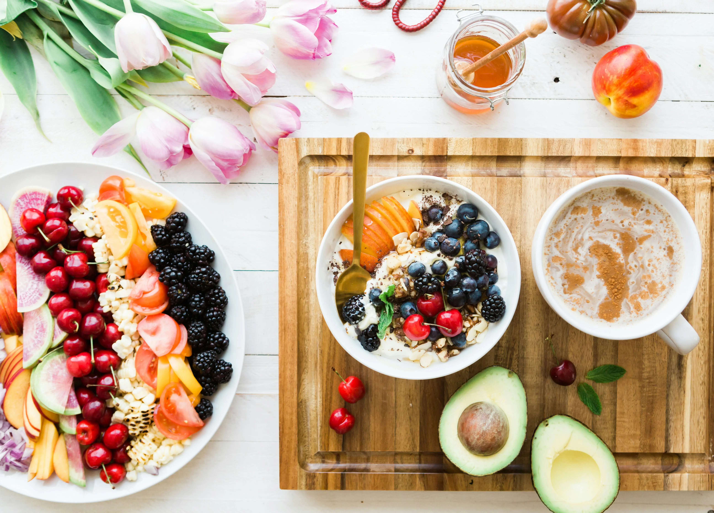

Understanding Macronutrients
Macronutrients — or "macros" — are the three main nutrients your body uses for energy: protein, carbohydrates, and fats. Understanding them doesn't mean obsessively counting every calorie. It means learning to build balanced meals that keep you energized, satisfied, and supporting your fitness goals.
| Macro | Role in the Body | Calories per Gram | Good Sources |
|---|---|---|---|
| Protein | Builds and repairs muscle, keeps you full | 4 cal/g | Chicken, eggs, Greek yogurt, tofu, lentils |
| Carbohydrates | Primary energy source for the brain and muscles | 4 cal/g | Oats, rice, sweet potato, fruit, whole grain bread |
| Fats | Supports hormones, brain function, and nutrient absorption | 9 cal/g | Avocado, olive oil, nuts, seeds, salmon |

Sample 5-Day Meal Plan
This balanced meal plan is designed to be simple, affordable, and easy to prep ahead. Adjust portions based on your individual goals and appetite.
| Day | Breakfast | Lunch | Dinner | Snack |
|---|---|---|---|---|
| Monday | Oatmeal with berries & almond butter | Grilled chicken salad with olive oil | Salmon, roasted sweet potato, broccoli | Greek yogurt & almonds |
| Tuesday | Scrambled eggs, whole grain toast, avocado | Turkey & hummus wrap with veggies | Stir-fry tofu with brown rice & vegetables | Apple with peanut butter |
| Wednesday | Greek yogurt parfait with granola & fruit | Lentil soup with whole grain bread | Grilled chicken, quinoa, roasted zucchini | Mixed nuts & dark chocolate |
| Thursday | Smoothie (banana, spinach, protein powder, almond milk) | Tuna salad on whole grain crackers | Ground turkey taco bowls with black beans | Cottage cheese & cucumber |
| Friday | Whole grain waffles with fresh berries | Chickpea & veggie Buddha bowl | Baked cod with asparagus & brown rice | Edamame & green tea |
Meal Prep Tips
- Pick one day a week (Sunday works great) to batch-cook grains, proteins, and roasted vegetables.
- Invest in a set of glass containers — they make portioning and storing meals easy.
- Keep your pantry stocked with staples: oats, canned beans, rice, olive oil, and spices.
- Prep snacks too — portion out nuts, cut up fruit, and pre-fill yogurt cups so healthy choices are grab-and-go.
- For more detailed nutrition information, visit Healthline Nutrition (healthline.com).